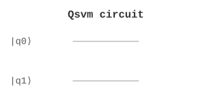

ML / 机器学习 | 难度：高级 | 预计时间：20 分钟
量子 SVM 利用量子核函数进行分类，是量子机器学习的核心算法之一。
经典 SVM 核函数计算慢，对于 \(N\) 个样本需要 \(O(N^2)\) 时间
经典核函数受限于多项式核、RBF 核等有限类型
对于高维数据，经典方法效率低
量子 SVM 可以在指数维的 Hilbert 空间中计算核函数
量子核函数可以表示经典核函数无法表示的复杂模式
对于某些问题，量子 SVM 提供指数加速
二分类问题（如图像分类、文本分类）
多分类问题（如手写数字识别）
异常检测（如金融欺诈检测）
特征提取（如量子特征映射）
from quonic.ml import qsvm
# 准备数据
data = [[0, 1], [1, 0], [1, 1], [0, 0]]
labels = [0, 1, 1, 0]
# 训练量子 SVM
result = qsvm(data, labels)
print(f'Accuracy: {result.accuracy}')
print(f'Support vectors: {result.support_vectors}')预期输出：
Accuracy: 1.0
Support vectors: [[0, 1], [1, 0]]
Step 1: 量子特征映射
将经典数据 \(x\) 映射到量子态： \[\begin{equation} |\phi(x)\rangle = U(x)|0\rangle^{\otimes n} \end{equation}\]
其中 \(U(x)\) 是参数化量子电路。
Step 2: 量子核函数
量子核函数定义为两个量子态的内积： \[\begin{equation} K(x_i, x_j) = |\langle\phi(x_i)|\phi(x_j)\rangle|^2 \end{equation}\]
这可以重写为： \[\begin{equation} K(x_i, x_j) = |\langle 0|^{\otimes n} U^\dagger(x_i) U(x_j) |0\rangle^{\otimes n}|^2 \end{equation}\]
Step 3: 核矩阵计算
对于 \(N\) 个样本，计算 \(N \times N\) 的核矩阵： \[\begin{equation} K_{ij} = K(x_i, x_j) \end{equation}\]
Step 4: 经典 SVM 求解
使用经典 SVM 求解优化问题： \[\begin{equation} \max_\alpha \sum_i \alpha_i - \frac{1}{2} \sum_{i,j} \alpha_i \alpha_j y_i y_j K_{ij} \end{equation}\]
约束条件： \[\begin{equation} \sum_i \alpha_i y_i = 0, \quad \alpha_i \geq 0 \end{equation}\]
Step 5: 预测
对于新样本 \(x\)，预测标签： \[\begin{equation} f(x) = \text{sign}\left(\sum_{i \in SV} \alpha_i y_i K(x_i, x) + b\right) \end{equation}\]
量子 SVM 在量子态空间中找到最大间隔超平面。量子核函数将数据映射到高维 Hilbert 空间，使得线性不可分的数据变得线性可分。
在 Bloch 球上，量子特征映射将经典数据编码为量子态的旋转角度，量子核函数计算两个量子态的重叠度。
from quonic.ml import qsvm
# qsvm(data, labels, kernel, C)
# data: 训练数据，形状为 (n_samples, n_features)
# labels: 标签，形状为 (n_samples,)
# kernel: 核函数类型 ('quantum', 'rbf', 'poly')
# C: 正则化参数
result = qsvm(
data=[[0, 1], [1, 0], [1, 1], [0, 0]],
labels=[0, 1, 1, 0],
kernel='quantum',
C=1.0
)
# result.accuracy: 准确率
# result.support_vectors: 支持向量
# result.dual_coef: 对偶系数
# result.intercept: 截距
print(f'Accuracy: {result.accuracy}')
print(f'Support vectors: {result.support_vectors}')XOR 问题是经典线性 SVM 无法解决的，但量子 SVM 可以：
from quonic.ml import qsvm
import numpy as np
# XOR 数据：线性不可分
data = [[0, 0], [0, 1], [1, 0], [1, 1]]
labels = [0, 1, 1, 0] # XOR 标签
# 经典 RBF 核 SVM（可能失败）
result_classic = qsvm(data, labels, kernel='rbf')
print(f'Classic SVM accuracy: {result_classic.accuracy}')
# 量子核 SVM（利用高维特征空间）
result_quantum = qsvm(data, labels, kernel='quantum')
print(f'Quantum SVM accuracy: {result_quantum.accuracy}')
# 量子核将数据映射到 4 维 Hilbert 空间
# 在高维空间中，XOR 数据变得线性可分from quonic.ml import qsvm
from quonic.datasets import load_digits
# 加载手写数字数据集
digits = load_digits(n_classes=2) # 二分类：0 vs 1
X_train, X_test = digits.data[:100], digits.data[100:]
y_train, y_test = digits.target[:100], digits.target[100:]
# 降维到 4 维（减少量子比特数）
from sklearn.decomposition import PCA
pca = PCA(n_components=4)
X_train_pca = pca.fit_transform(X_train)
X_test_pca = pca.transform(X_test)
# 训练量子 SVM
result = qsvm(X_train_pca.tolist(), y_train.tolist(), kernel='quantum')
# 预测
predictions = result.predict(X_test_pca.tolist())
accuracy = sum(p == t for p, t in zip(predictions, y_test)) / len(y_test)
print(f'Test accuracy: {accuracy}')from quonic.ml import qsvm
import matplotlib.pyplot as plt
# 生成二维数据
np.random.seed(42)
X = np.random.randn(20, 2)
y = (X[:, 0]**2 + X[:, 1]**2 < 1).astype(int)
# 计算量子核矩阵
result = qsvm(X.tolist(), y.tolist(), kernel='quantum')
K_quantum = result.kernel_matrix
# 可视化核矩阵
plt.figure(figsize=(8, 6))
plt.imshow(K_quantum, cmap='viridis')
plt.colorbar()
plt.title('Quantum Kernel Matrix')
plt.xlabel('Sample index')
plt.ylabel('Sample index')
plt.savefig('quantum_kernel.png')
plt.show()
# 分析：量子核矩阵的块结构反映了数据的类别结构
# 对角块（同类样本）的核值较高
# 非对角块（不同类样本）的核值较低量子 SVM 可以用于图像分类任务，如手写数字识别、人脸识别等。
量子 SVM 可以用于文本分类任务，如垃圾邮件检测、情感分析等。
量子 SVM 可以用于异常检测任务，如金融欺诈检测、网络入侵检测等。
量子特征映射可以作为特征提取器，将原始数据映射到高维空间。
量子 SVM 可以在指数维的 Hilbert 空间中计算核函数，这是经典核函数无法做到的。对于某些问题，量子 SVM 提供指数加速。
量子 SVM 的精度取决于：
量子特征映射的选择
数据的质量和数量
正则化参数 C 的选择
量子 SVM 需要的量子比特数取决于特征维度。对于 \(d\) 维特征，需要 \(\lceil \log_2(d) \rceil\) 个量子比特。
量子 SVM 使用量子核函数，可以在更高维的空间中计算核矩阵。经典 SVM 使用经典核函数（如 RBF 核），受限于有限的核函数类型。
量子 SVM 的训练时间包括：
量子核矩阵计算：\(O(N^2 \cdot T_{\text{circuit}})\)
经典 SVM 求解：\(O(N^3)\)
其中 \(T_{\text{circuit}}\) 是量子电路的执行时间。
支持向量机（SVM）
核方法
量子比特和量子门
量子测量
量子核方法（更一般的框架）
量子神经网络（QNN）
量子主成分分析（QPCA）
量子聚类
from quonic.ml import qsvm
data = [[0, 1], [1, 0], [1, 1], [0, 0]]
labels = [0, 1, 1, 0]
result = qsvm(data, labels)
print(f'Accuracy: {result.accuracy}')from quonic.ml import qsvm
# 添加噪声
data_noisy = [[0 + 0.1, 1 - 0.1], [1 - 0.1, 0 + 0.1]]
labels_noisy = [0, 1]
result = qsvm(data_noisy, labels_noisy, noise=0.05)
print(f'Accuracy: {result.accuracy}')(https://github.com/ChrisLee0721/QuoNic/blob/main/examples/qsvm/qsvm.py)